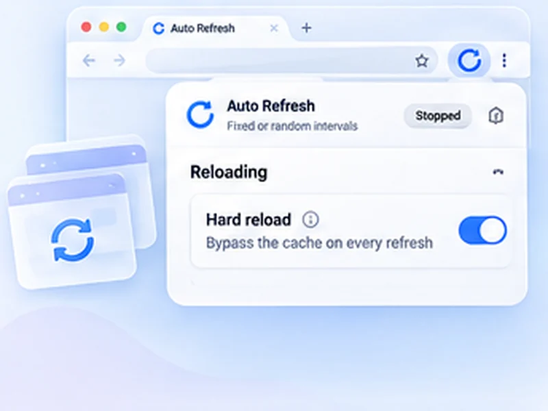

Live reload, with nothing to set up.
No plugin, no dev-server config. Put the preview tab on a short timer and keep typing in your editor.

How web development works
No plugin, no dev-server config. Put the preview tab on a short timer and keep typing in your editor.
A timer reloads whether or not you saved. For large projects a file-watching tool is more efficient; this is for quick jobs and sites you cannot add tooling to.
Quick setup
Open your local or staging page.
Set Min and Max to 3.
Switch on Hard reload and Keep scroll position.
Press Alt+Shift+R to start and stop from the keyboard.
Auto reload localhost without a build tool
Live reload normally needs a dev server or a plugin. When you are editing a static page, a legacy site or a remote staging server, that is not always possible. Putting the preview tab on a three-second timer gives you the same effect with no configuration.
Settings that suit development
- Hard reload so new CSS and JavaScript are never served from cache.
- Keep scroll position to stay on the section you are styling.
- Pause while typing when testing forms.
- Alt+Shift+R to start and stop without leaving the keyboard.
When a real live-reload tool is better
A timer reloads whether or not anything changed. On large projects a file-watching tool is more efficient. Use this for quick jobs and for sites you cannot add tooling to.
A worked example: editing a static page
Open your page from a local server or the staging site. Set Min and Max to 3, switch on Hard reload and Keep scroll position, and press Alt+Shift+R. Edit and save in your editor; within three seconds the browser shows the result, at the same scroll position. Press Alt+Shift+R again to stop.
Auto refresh localhost: things to know
- localhost and 127.0.0.1 work like any other site.
- file:// pages need permission. Enable Allow access to file URLs for the extension.
- Open DevTools state is kept, but the console clears on each reload unless you tick Preserve log.
Testing forms without losing input
Leave Pause while typing on. While you type into a field, the reload is held, so you can test validation without the page resetting under you.
At a glance
- Works with anything. Static HTML, PHP, WordPress themes, a remote staging site: if it loads in a tab, it reloads.
- Fresh assets. Hard reload skips the cache so new CSS and JavaScript show up.
- Stays where you were. Keep scroll position holds your place in a long page.
Questions, answered.
Is this a live reload extension?
It reloads on a timer, not on file save. For small projects the result is much the same.
Does it work with file:// pages?
Only if you allow the extension access to file URLs in the browser's extension settings.
Will it show my latest CSS?
Yes, with Hard reload on.
Does it work with any framework?
Yes. It only reloads the tab.
Does it work with file:// pages?
Only if you allow the extension access to file URLs in the browser's extension settings.
Let the page check itself.
Use the free extension for Chrome or Firefox.
Have a different use case in mind?
Share the browser task you would like to make easier. Your idea helps guide what gets built next.